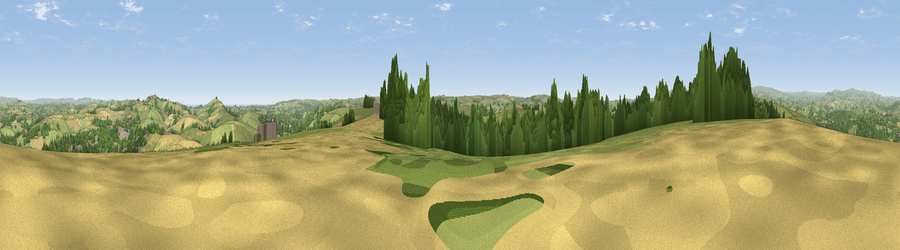

Viewpoint near Totnes
#6149 in England · top 15% of its area beats it · near Totnes · path 104 mWhere it is
The exact computed spot (SX 80425 59175). Click the marker for map links.
Public access: the nearest public right of way is about 104 m away — the final stretch may cross private land. Computed from Natural England's CRoW access layer and OpenStreetMap rights of way — not the legal definitive map. Always verify locally.
The view, rendered

A 360° render of this exact spot computed from the terrain model, tree cover and land cover — summer colours, afternoon light, calibrated against photographs of famous viewpoints. Real trees, hedges and buildings will differ in detail.
The panorama
Grey silhouette: terrain skyline in each direction (720 bearings, Earth curvature and refraction included). Dashed green: skyline with trees (+15 m) and buildings (+8 m) as obstacles. Blue strip: how far the ground is visible on each bearing.
Where the view opens
Wedge length = distance to the farthest visible ground on that bearing (vegetation-aware). Rings at 10, 25 and 50 km.
What fills the view
45% grassland · 27% woodland · 17% cropland · 10% built-up · 1% water
Angular shares of the visible panorama (visual magnitude), not map area. Landscape diversity 0.57 (0–1 Shannon).
Key numbers
More beautiful places nearby
The staircase of upgrades: each row has a higher view potential than everything closer. Driving times are estimates from straight-line distance, calibrated against real road routing — check an actual route before setting out.
| Place | Direction | Drive | Score |
|---|---|---|---|
| Viewpoint near Stoke Gabriel | E · 5 km | ~11 min | 79.1 |
| Beacon Hill | ENE · 6 km | ~13 min | 82.3 |
| Viewpoint near Kingswear | SE · 13 km | ~24 min | 83.8 |
| Viewpoint near Stokeinteignhead | NE · 16 km | ~29 min | 84.1 |
| Viewpoint near East Prawle | S · 23 km | ~38 min | 84.6 |
| High Peak | NE · 40 km | ~59 min | 85.3 |
| Pencarrow Head | W · 66 km | ~88 min | 86.0 |
| Golden Cap | ENE · 69 km | ~92 min | 88.7 |
50.42023, -3.68455 · source: screening · position refined by local search. Computed location — check access rights before visiting.